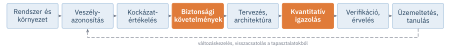
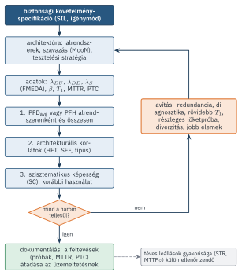
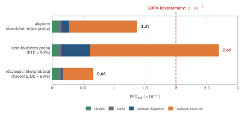
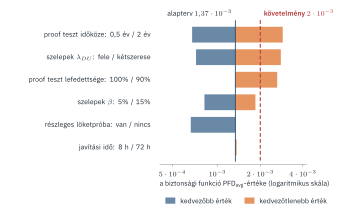

13. A biztonsági integritás igazolása: PFD, PFH és SIL

A kockázatelemzés és a LOPA megmondja, mekkora kockázatcsökkentést kell egy biztonsági funkciónak biztosítania (3. és 11. fejezet). A tervezés ezután egy konkrét architektúrát javasol: érzékelőket, logikát, beavatkozókat, redundanciát és tesztelési stratégiát. Ez a fejezet arról szól, hogyan igazolható, hogy a tervezett funkció valóban teljesíti a követelményt. Az igazolásnak három pillére van (4.3.2. szakasz): a véletlenszerű hardvermeghibásodások számszerű célértéke, az architekturális korlátok és a szisztematikus képesség. A fejezet a megbízhatósági, a hibafa- és a Markov-modellek eredményeit egyetlen gyakorlati eljárásba foglalja, és a ReaktorVéd példáján végigvezet egy teljes SIL-igazoláson, a téves leállásokat is beleértve.
A fejezet végére képes leszel
- a biztonsági funkció elemeinek meghibásodásait biztonságos, felfedett veszélyes és rejtett veszélyes kategóriákba sorolni, és kiszámolni a diagnosztikai lefedettséget és a biztonságos meghibásodási hányadot;
- az IEC 61508-6 egyszerűsített képleteivel kiszámolni az 1oo1, 1oo2 és 2oo3 alrendszerek PFDavg-értékét, valamint a nagy igénybevételű funkciók PFH-értékét;
- ellenőrizni az architekturális korlátokat az IEC 61508 és az IEC 61511 szerint, és értelmezni a szisztematikus képesség követelményét;
- érzékenységvizsgálattal azonosítani a PFD-t leginkább befolyásoló tényezőket, és értékelni a részleges löketpróba és a nem tökéletes proof teszt hatását;
- a biztonsági funkció téves leállási gyakoriságát is becsülni, és a biztonság és a rendelkezésre állás közötti egyensúlyt mérlegelni.
13.1. Az igazolás menete
A SIL-igazolás nem egyetlen számítás, hanem egy ciklikus tervezési folyamat része (13.1. ábra). A kiindulópont a biztonsági követelményspecifikáció (SRS), amely rögzíti a funkciót, a SIL-t, az igénymódot, a válaszidőt, a biztonságos állapotot és a megengedett téves leállási gyakoriságot (IEC 2016). A tervezők egy architektúrát javasolnak, összegyűjtik az elemek meghibásodási adatait, majd a három pillér szerint ellenőrzik a tervet. Ha bármelyik nem teljesül, módosítanak (redundancia, jobb diagnosztika, rövidebb próbaidőköz, részleges löketpróba, diverzitás, más elemek), és újra ellenőriznek. A végén a számításban használt feltevések (a próbák gyakorisága és lefedettsége, a javítási idő, a kiiktatások szabályai) az üzemeltetési és karbantartási követelmények részévé válnak, hiszen az igazolás csak addig érvényes, amíg ezek teljesülnek.

13.1.1. Meghibásodási kategóriák
A biztonsági funkció elemeinek meghibásodásait a funkcióra gyakorolt hatásuk szerint soroljuk be (2.6.2. szakasz, 6.5. szakasz). A meghibásodási ráta
\[ \lambda = \lambda_S + \lambda_D, \qquad \lambda_D = \lambda_{DD} + \lambda_{DU}, \tag{13.1}\]
ahol \(\lambda_S\) a biztonságos (a funkciót nem akadályozó, legfeljebb téves működést okozó), \(\lambda_{DD}\) a felfedett veszélyes (a diagnosztika által rövid időn belül észlelt) és \(\lambda_{DU}\) a rejtett veszélyes meghibásodások rátája. Két származtatott jellemző:
\[ \text{DC} = \frac{\lambda_{DD}}{\lambda_D}, \qquad \text{SFF} = \frac{\lambda_S + \lambda_{DD}}{\lambda_S + \lambda_D} . \tag{13.2}\]
A diagnosztikai lefedettség (DC) a veszélyes meghibásodások felfedett hányada, a biztonságos meghibásodási hányad (SFF) pedig azoknak a meghibásodásoknak az aránya, amelyek nem vezetnek rejtett veszélyes állapothoz (IEC 2010). A PFD szempontjából a \(\lambda_{DU}\) a döntő: ezek a hibák csak a proof teszten vagy egy valódi igénynél derülnek ki.
A meghibásodási adatok forrásai a gyártók FMEDA-alapú tanúsítványai, az iparági adatbázisok és kézikönyvek (például a SINTEF PDS-módszerének adatai (Hauge és mtsai. 2013)), valamint az üzem saját tapasztalati adatai. Mindegyiknek megvannak a maga feltevései: a tanúsítvány rendszerint ideális telepítést és környezetet feltételez, az adatbázisok sokféle alkalmazás átlagát adják, a saját adatok pedig kevés meghibásodásra épülnek. A 8. fejezetben láttuk, hogy kevés megfigyelésből a ráta felső konfidenciakorlátja akár másfél-kétszerese is lehet a pontbecslésnek. Az igazolásban mindig rögzíteni kell, melyik adatot honnan vettük, és miért tekintjük az adott alkalmazásban érvényesnek.
13.2. A PFDavg számítása
Alacsony igénybevételű funkcióknál (az igények gyakorisága legfeljebb évi egy, 4.3. szakasz) a mérőszám az igénykori meghibásodás átlagos valószínűsége, a PFDavg. A teljes funkció PFDavg-értéke az alrendszerek (érzékelők, logika, beavatkozók) értékének összege, hiszen bármelyik alrendszer kudarca a funkció kudarcát jelenti:
\[ \text{PFD}_{\text{SIF}} \approx \text{PFD}_{\text{érzékelők}} + \text{PFD}_{\text{logika}} + \text{PFD}_{\text{beavatkozók}} . \tag{13.3}\]
Az alrendszerek PFDavg-értékére az IEC 61508-6 B melléklete egyszerűsített képleteket ad (IEC 2010). Ezek a 12. fejezet többfázisú Markov-modelljeinek közelítései, amelyek akkor pontosak, ha \(\lambda T_1 \ll 1\), a csatornákat egyszerre tesztelik, és a próba tökéletes. Két ekvivalens leállási időt definiálnak: a csatornáét (\(t_{CE}\)) és a csoportét (\(t_{GE}\)),
\[ t_{CE} = \frac{\lambda_{DU}}{\lambda_D}\left(\frac{T_1}{2} + \text{MRT}\right) + \frac{\lambda_{DD}}{\lambda_D}\,\text{MTTR}, \qquad t_{GE} = \frac{\lambda_{DU}}{\lambda_D}\left(\frac{T_1}{3} + \text{MRT}\right) + \frac{\lambda_{DD}}{\lambda_D}\,\text{MTTR}, \tag{13.4}\]
ahol \(T_1\) a proof teszt időköze, MRT az átlagos javítási idő a rejtett hiba felfedése után, MTTR pedig a felfedett hiba helyreállításának átlagos ideje. (A következő példákban egyszerűségből mindkettőt MTTR-rel jelöljük.) A \(T_1/3\) a 10. fejezetben látott 4/3-os időátlagolási tényező forrása. A három legfontosabb architektúra képlete:
\[ \begin{aligned} \text{PFD}_{1\text{oo}1} &= \lambda_D\, t_{CE}, \\ \text{PFD}_{1\text{oo}2} &= 2\bigl[(1-\beta_D)\lambda_{DD} + (1-\beta)\lambda_{DU}\bigr]^2 t_{CE}\, t_{GE} + \beta_D\lambda_{DD}\,\text{MTTR} + \beta\lambda_{DU}\left(\frac{T_1}{2} + \text{MRT}\right), \\ \text{PFD}_{2\text{oo}3} &= 6\bigl[(1-\beta_D)\lambda_{DD} + (1-\beta)\lambda_{DU}\bigr]^2 t_{CE}\, t_{GE} + \beta_D\lambda_{DD}\,\text{MTTR} + \beta\lambda_{DU}\left(\frac{T_1}{2} + \text{MRT}\right). \end{aligned} \tag{13.5}\]
A redundáns képletek első tagja a független kettős meghibásodások, a második és a harmadik a felfedett, illetve a rejtett hibák közös okú hozzájárulása; \(\beta\) és \(\beta_D\) a rejtett, illetve a felfedett hibákra vonatkozó közös okú tényező (10.6. szakasz). A 2oo3 független tagjának 6-os szorzója abból adódik, hogy három csatornapárból bármelyik kettős meghibásodása elég a kudarchoz. Egy 2oo2 alrendszer egyszerűen két 1oo1 csatorna soros kapcsolata: \(\text{PFD}_{2\text{oo}2} = 2\lambda_D t_{CE}\).
A ReaktorVéd biztonsági funkciójának adatait a 13.1. táblázat foglalja össze. A funkció hibabiztos kivitelű: a szelepek energiamentesítésre zárnak, a távadók élő nullás áramhurokkal csatlakoznak (10.6. szakasz).
| Alrendszer | Architektúra | \(\lambda_{DU}\) [h-1] | \(\lambda_{DD}\) [h-1] | \(\lambda_S\) [h-1] | \(\beta\) / \(\beta_D\) | Típus |
|---|---|---|---|---|---|---|
| hőmérséklet-távadók (TT-101/102) | 1oo2 | \(4\cdot10^{-7}\) | \(6\cdot10^{-7}\) | \(5\cdot10^{-7}\) | 5% / 2,5% | B |
| biztonsági PLC | 1oo1 (tanúsított) | – | – | – | – | SIL 3 |
| gyorszáró szelepek (XV-101/102) | 1oo2 | \(2{,}5\cdot10^{-6}\) | 0 | – | 10% / – | A |
Távadók. \(\lambda_D = 10^{-6}\,\text{h}^{-1}\), \(\text{DC} = 60\%\). Az ekvivalens leállási idők \(t_{CE} = 0{,}4\cdot 4388 + 0{,}6\cdot 8 = 1760\) óra és \(t_{GE} = 0{,}4\cdot 2928 + 0{,}6\cdot 8 = 1176\) óra. A független tag \(2\cdot(5{,}85\cdot10^{-7} + 3{,}8\cdot10^{-7})^2 \cdot 1760 \cdot 1176 = 3{,}86\cdot10^{-6}\), a közös okú tagok \(0{,}025\cdot 6\cdot10^{-7}\cdot 8 + 0{,}05\cdot 4\cdot10^{-7}\cdot 4388 = 8{,}79\cdot10^{-5}\). Összesen \(\text{PFD}_{\text{TT}} = 9{,}17\cdot10^{-5}\).
Logika. A tanúsított biztonsági PLC gyártói értéke \(\text{PFD}_{\text{L}} = 5\cdot10^{-5}\) az adott próbaidőközre.
Szelepek. \(\lambda_{DD} = 0\), így \(t_{CE} = 4388\) óra, \(t_{GE} = 2928\) óra. A független tag \(2\cdot(2{,}25\cdot10^{-6})^2\cdot 4388\cdot 2928 = 1{,}30\cdot10^{-4}\), a közös okú tag \(0{,}1\cdot 2{,}5\cdot10^{-6}\cdot 4388 = 1{,}097\cdot10^{-3}\). Összesen \(\text{PFD}_{\text{V}} = 1{,}227\cdot10^{-3}\).
A funkció. \(\text{PFD}_{\text{SIF}} = 9{,}17\cdot10^{-5} + 5\cdot10^{-5} + 1{,}227\cdot10^{-3} = 1{,}369\cdot10^{-3}\), azaz \(\text{RRF} = 731\). A LOPA követelménye (\(\text{PFD} \le 2\cdot10^{-3}\), \(\text{RRF} \ge 500\)) teljesül. A PFD 90%-át a szelepek adják, és ezen belül is a közös okú meghibásodás; a távadók és a logika együtt csak 10%-ot.
Az eredmény jól egyezik a hibafa (\(1{,}335\cdot10^{-3}\), 10.6. szakasz) és a többfázisú Markov-modell (\(1{,}22\cdot10^{-3}\) a szelepekre, 12.5. szakasz) eredményével, és jóval nagyobb a blokkdiagram naiv becslésénél (\(1{,}7\cdot10^{-4}\), 9. fejezet). A különbség oka a közös okú meghibásodás és a helyes időátlagolás; a blokkdiagram egyiket sem veszi figyelembe.
- \(\lambda_D\) helyett \(\lambda_{DU}\), vagy fordítva: a felfedett hibák csak a javítási idő alatt rontják a PFD-t; ha a teljes \(\lambda_D\)-vel számolunk \(T_1/2\)-vel, nagyon pesszimista, ha a felfedett hibákat egyáltalán nem vesszük figyelembe, enyhén optimista az eredmény.
- A közös okú meghibásodás elhagyása: a redundáns alrendszerekben gyakran ez a domináns tag, ahogy a ReaktorVéd szelepeinél is.
- Tökéletes proof teszt feltételezése: a valóságos próbák ritkán fednek fel minden hibát (13.5. szakasz).
- A gyártói PFD-érték átvétele a feltevések ellenőrzése nélkül: a tanúsítvány egy adott próbaidőközre, javítási időre és környezetre érvényes.
- A redundáns csatornák PFD-jének szorzása: az átlagok szorzata nem a szorzat átlaga, és a közös okú tagot is elhagyja (10. fejezet).
- „SIL 2-es eszköz”: a SIL a biztonsági funkció tulajdonsága. Egy eszköz legfeljebb alkalmas egy adott SIL-ű funkcióban való használatra, a szisztematikus képessége és a hardveres jellemzői alapján.
13.3. Architekturális korlátok
A számított PFD önmagában nem elég, mert a meghibásodási adatok bizonytalanok, és a modell feltevései sérülhetnek. A szabványok ezért minimális hardveres hibatűrést (hardware fault tolerance, HFT) írnak elő: HFT = N azt jelenti, hogy N+1 hiba okozhatja a funkció elvesztését (egy 1oo2 alrendszer HFT-je 1, egy 2oo3-é szintén 1, egy 1oo3-é 2).
Az IEC 61508-2 két utat kínál (IEC 2010). Az 1H út a biztonságos meghibásodási hányadhoz és az elem típusához köti a megengedett SIL-t (13.2. táblázat). Az A típusú elemek meghibásodási módjai jól ismertek, és viselkedésük hibás állapotban is teljesen meghatározható (például szelepek, relék, egyszerű analóg érzékelők); a B típusú elemek összetettek, jellemzően mikroprocesszorosak, és nem minden meghibásodási módjuk ismert (például okos távadók, PLC-k).
| SFF | A típus, HFT = 0 | HFT = 1 | HFT = 2 | B típus, HFT = 0 | HFT = 1 | HFT = 2 |
|---|---|---|---|---|---|---|
| < 60% | SIL 1 | SIL 2 | SIL 3 | nem megengedett | SIL 1 | SIL 2 |
| 60% – < 90% | SIL 2 | SIL 3 | SIL 4 | SIL 1 | SIL 2 | SIL 3 |
| 90% – < 99% | SIL 3 | SIL 4 | SIL 4 | SIL 2 | SIL 3 | SIL 4 |
| ≥ 99% | SIL 3 | SIL 4 | SIL 4 | SIL 3 | SIL 4 | SIL 4 |
A 2H út a tényleges üzemi tapasztalaton alapuló meghibásodási adatokra épít, és egyszerűbb HFT-követelményt támaszt: SIL 4-hez HFT = 2, SIL 3-hoz HFT = 1, SIL 2-höz nagy igénybevételnél HFT = 1, alacsony igénybevételnél HFT = 0, SIL 1-hez HFT = 0. Cserébe a meghibásodási rátákat legalább 70%-os konfidenciaszinten kell becsülni, és a célérték teljesülését is a bizonytalanság figyelembevételével kell igazolni (IEC 2010). A folyamatipari IEC 61511 2016-os kiadása ehhez hasonló, egyszerű táblázatot használ (13.3. táblázat), és az SFF-et elhagyta a követelmények közül (IEC 2016).
| SIL | Igénymód | Minimális HFT |
|---|---|---|
| 1 | bármely | 0 |
| 2 | alacsony igénybevétel | 0 |
| 2 | nagy igénybevétel vagy folyamatos | 1 |
| 3 | bármely | 1 |
| 4 | bármely | 2 |
Az architekturális korlátok szerepe vitatott. Lundteigen és Rausand elemzése szerint a korlátok és a PFD-számítás nem mindig ugyanabba az irányba terelik a tervezőt, és az SFF ösztönözheti a biztonságos meghibásodások „felhizlalását” is, ami a valódi biztonságot nem javítja, a téves leállásokat viszont növeli (Lundteigen és Rausand 2009). Ez is szerepet játszott abban, hogy az IEC 61511 új kiadása egyszerűbb, HFT-alapú követelményre tért át.
A távadók SFF-je \((5 + 6)\cdot10^{-7}/(1{,}5\cdot10^{-6}) = 73\%\); B típusúak, HFT = 1, így az 1H út szerint SIL 2-ig alkalmazhatók. A szelepek A típusúak, diagnosztika nélkül az SFF-jük 60% alatt van, de HFT = 1 mellett SIL 2-ig alkalmazhatók. A biztonsági PLC tanúsítványa szerint SIL 3-ig alkalmas. A funkció tehát az IEC 61508 1H útja szerint teljesíti a SIL 2 architekturális követelményeit. Az IEC 61511 szerint SIL 2-höz alacsony igénybevételnél HFT = 0 is elég volna; a redundanciára itt a PFD-célérték miatt van szükség, nem az architekturális korlát miatt. Egycsatornás szelepekkel a funkció PFD-je \(1{,}1\cdot10^{-2}\) fölött lenne, SIL 1 tartományban.
13.4. Szisztematikus képesség
A számszerű célérték és az architekturális korlátok a véletlenszerű hardvermeghibásodások ellen védenek. A szisztematikus hibák (specifikációs, tervezési, szoftver- és gyártási hibák) azonban nem írhatók le meghibásodási rátával (2. fejezet). Ellenük a fejlesztési folyamat szigorúsága véd: az IEC 61508 minden SIL-hez meghatározott módszereket és technikákat ír elő a specifikációtól a validálásig. Egy elem szisztematikus képessége (systematic capability, SC 1–4) azt fejezi ki, hogy milyen SIL-ű funkcióban használható a szisztematikus integritás szempontjából (IEC 2010).
A szisztematikus képesség háromféleképpen igazolható: az IEC 61508 szerinti fejlesztéssel (1S út), az üzemi tapasztalattal igazolt megbízhatósággal (proven in use, 2S út), illetve a korábban kifejlesztett szoftverek esetén a 3S úttal. A folyamatiparban az IEC 61511 a korábbi használat (prior use) fogalmát vezeti be: egy eszköz akkor választható, ha az üzemeltető hasonló alkalmazásban és környezetben szerzett, dokumentált tapasztalata igazolja az alkalmasságát (IEC 2016). Az alkalmazási szoftverre (a biztonsági PLC-ben futó logikára) az IEC 61511 saját életciklus-követelményeket támaszt; a szoftverek biztonságát a 15. fejezet tárgyalja.
13.5. Részleges löketpróba és nem tökéletes proof teszt
A gyorszáró szelepek éves proof tesztje a folyamat leállítását igényli, ezért a próbaidőköz nem rövidíthető tetszés szerint. A részleges löketpróba (partial stroke testing, PST) üzem közben, a szelepet csak részben (például 10–20%-ban) megmozdítva ellenőrzi, hogy a szelep nem ragadt-e be, és a működtető, a mágnesszelep és a rugó működik-e. A PST nem helyettesíti a teljes próbát, mert a zárás tömörségét és a teljes löketet nem ellenőrzi, de a rejtett hibák egy részét sokkal gyakrabban fedi fel (Rausand 2014).
A PST hatása a 12.5.1. szakasz gondolatmenetével számolható: a szelep rejtett hibáinak \(\text{DC}_{\text{PST}}\) hányada a PST időközében, a többi a teljes próba időközében derül ki. Ennek fordítottja a nem tökéletes proof teszt: ha a teljes próba lefedettsége \(\text{PTC} < 100\%\), a fel nem fedett hibák csak a nagyjavításkor derülnek ki.
Ha a szelepek éves próbája csak a hibák 90%-át fedi fel (például mert a próba nem ellenőrzi a zárás tömörségét az üzemi nyomáskülönbség mellett), és a szelepeket tízévenként újítják fel, a funkció PFD-je \(2{,}69\cdot10^{-3}\)-ra nő (13.2. ábra). Ez nem teljesíti a LOPA követelményét. Egy apró eljárási részlet tehát érvénytelenítheti a SIL-igazolást.
Ha viszont havonta részleges löketpróbát végeznek, amely a szelephibák 60%-át felfedi, a szelepek közös okú tagja \(1{,}097\cdot10^{-3}\)-ról \(4{,}95\cdot10^{-4}\)-re, a független tag \(1{,}30\cdot10^{-4}\)-ről \(2{,}6\cdot10^{-5}\)-re csökken. A funkció PFD-je \(6{,}63\cdot10^{-4}\), \(\text{RRF} = 1508\): kétszeres tartalék a követelményhez képest. A számításokat numerikus időátlagolással is ellenőriztük; az eltérés a képletektől 1–3%.

A PST lefedettségét azonban igazolni kell: függ a szelep és a működtető típusától, a meghibásodási módoktól és a próba kivitelezésétől. A 60% egy gondos FMEDA-val alátámasztandó feltevés, nem általános érték.
13.6. Érzékenységvizsgálat
A PFD-számítás bemenő adatai bizonytalanok, és a feltevések üzem közben változhatnak. Az érzékenységvizsgálat megmutatja, mely tényezők befolyásolják leginkább az eredményt, és ezzel azt is, mire kell az üzemeltetésnek a legjobban figyelnie. A ReaktorVéd tornádódiagramja (13.3. ábra) szerint a legerősebb hatása a proof teszt időközének (fél és két év között \(6{,}8\cdot10^{-4}\) és \(2{,}95\cdot10^{-3}\) között változik a PFD), a szelepek rejtett meghibásodási rátájának, a próba lefedettségének és a szelepek közös okú tényezőjének van. A javítási idő hatása elhanyagolható: még 72 óra is csak 1,6%-kal növeli a PFD-t, mert a redundáns szelepeknél egyetlen hiba javítása alatt a másik szelep még véd.

A tanulság gyakorlati: a ReaktorVéd biztonsága a szelepeken múlik. A kétéves próbaidőköz, a kétszer rosszabb szelepadat vagy a 90%-os próbalefedettség egyaránt elég ahhoz, hogy a funkció ne teljesítse a követelményt. Az igazolásnak ezért a szelepek kiválasztására (üzemi tapasztalat, megfelelő típus), a közös okú hibák csökkentésére (különálló mágnesszelepek és tápellátás, eltérő gyártójú vagy típusú szelepek, eltolt karbantartás) és a próbaeljárás minőségére kell összpontosítania. A távadók és a logika ennél jóval kevésbé kritikusak.
13.7. Téves leállások
A biztonsági funkció kétféleképpen hibázhat: veszélyesen és biztonságosan (9.3.1. szakasz). A biztonságos meghibásodások a folyamat téves leállását (spurious trip) okozzák. Ez nemcsak termelési veszteség: a leállások és az újraindítások maguk is veszélyes átmeneti állapotok, a gyakori téves leállás pedig arra ösztönözheti a kezelőket, hogy kiiktassák a védelmet. Az IEC 61511 ezért előírja, hogy a biztonsági követelményspecifikáció rögzítse a megengedett legnagyobb téves leállási gyakoriságot (IEC 2016). A jellemzők a téves leállási gyakoriság (spurious trip rate, STR) és annak reciproka, a téves leállásig eltelt átlagos idő (MTTFS).
Az 1oo2 alrendszer bármelyik csatornájának téves jelzésére leállít, ezért téves leállási gyakorisága \(\text{STR}_{1\text{oo}2} \approx 2(\lambda_S + \lambda_{DD})\), ha a felfedett veszélyes hibákra is leállás a reakció. A 2oo3 alrendszer csak két csatorna egyidejű téves jelzésére állít le, ezért \(\text{STR}_{2\text{oo}3} \approx 6(\lambda_S + \lambda_{DD})^2\,\text{MTTR}\), ami nagyságrendekkel kisebb.
A hibabiztos átalakítás (10.6. szakasz) a tápegységek kiesését a veszélyes hibafából a téves leállások hibafájába helyezte át. A 13.4. táblázat a következő feltevésekkel számol: a távadók \(\lambda_S + \lambda_{DD} = 1{,}1\cdot10^{-6}\,\text{h}^{-1}\), egy szelep téves zárása \(10^{-6}\,\text{h}^{-1}\), a logika téves kimenete \(10^{-6}\,\text{h}^{-1}\), egy tápegység kiesése \(5\cdot10^{-6}\,\text{h}^{-1}\).
| Változat | STR [1/év] | MTTFS [év] | Domináns tag |
|---|---|---|---|
| 1oo2 távadók, két egyszeres tápegység | 0,133 | 7,5 | tápegységek (66%) |
| 1oo2 távadók, redundáns tápellátás | 0,046 | 21,9 | szelepek, távadók, logika |
| 2oo3 távadók, redundáns tápellátás | 0,026 | 38,0 | szelepek, logika |
Az egyszeres tápegységekkel átlagosan hétévente egyszer állna le tévesen a reaktor; ennek kétharmadát a tápegységek okoznák. A redundáns (diódás VAGY-kapcsolású) tápellátás ezt a hozzájárulást gyakorlatilag megszünteti. A 2oo3 távadókkal a távadók téves leállásai is eltűnnek, a PFD pedig szinte változatlan (\(9{,}94\cdot10^{-5}\) az 1oo2 \(9{,}17\cdot10^{-5}\) értékéhez képest), mert mindkét esetben a közös okú tag dominál. Ugyanaz a probléma, a közös tápellátás, a 10. fejezetben a biztonságot, itt a rendelkezésre állást veszélyeztette; a megoldás mindkét esetben a függőség felismerése és megszüntetése.
13.8. Nagy igénybevétel: a PFH számítása
Ha a biztonsági funkció gyakran, évente többször működésbe lép, vagy folyamatosan működik (például egy gép biztonsági sebességfelügyelete vagy egy jármű kormányrendszerének felügyelete), a mérőszám a veszélyes meghibásodás átlagos gyakorisága, a PFH (4.2. táblázat). Ilyenkor a rejtett hiba gyakorlatilag azonnal veszélyes eseményhez vezet, hiszen az igény hamarosan bekövetkezik. Egycsatornás alrendszerre \(\text{PFH}_{1\text{oo}1} \approx \lambda_{DU}\), ha a felfedett hibákra a rendszer időben biztonságos állapotba kerül. Az 1oo2 alrendszer képlete az IEC 61508-6 szerint (IEC 2010)
\[ \text{PFH}_{1\text{oo}2} = 2\bigl[(1-\beta_D)\lambda_{DD} + (1-\beta)\lambda_{DU}\bigr](1-\beta)\lambda_{DU}\,t_{CE} + \beta_D\lambda_{DD} + \beta\lambda_{DU} . \tag{13.6}\]
A gépiparban az ISO 13849-1 egyszerűsített eljárást is kínál, amely a kategóriából, a csatornánkénti MTTFD-ből és az átlagos diagnosztikai lefedettségből táblázatosan adja a PFH-t és a PL-t; a közös okú meghibásodás elleni intézkedéseket pedig egy pontozásos lista értékeli, amelyen a 2-es kategóriától felfelé legalább 65 pontot kell elérni (ISO 2023).
A KoboCella biztonságos megállítási funkciója két független csatornán valósul meg (1oo2). Csatornánként \(\lambda_D = 10^{-6}\,\text{h}^{-1}\) (MTTFD ≈ 114 év), a diagnosztikai lefedettség 99%, így \(\lambda_{DD} = 9{,}9\cdot10^{-7}\) és \(\lambda_{DU} = 10^{-8}\,\text{h}^{-1}\); a közös okú tényezők \(\beta = 2\%\), \(\beta_D = 1\%\); a rejtett hibák csak a húszéves használati idő végén derülnének ki. Az 13.6. egyenletből \(\text{PFH} = 1{,}01\cdot10^{-8}\,\text{h}^{-1}\), amely teljesíti a PLr = e követelményét (\(\text{PFH} < 10^{-7}\), 4.6. táblázat).
A számításból egy meglepő tanulság is kiderül: a PFH szinte teljes egészében a \(\beta_D\lambda_{DD}\) tagból adódik, vagyis a felfedett hibák közös okú hányadából. Nagy igénybevételnél a diagnosztika csak akkor véd, ha a hiba felismerése és a biztonságos állapot elérése gyorsabb, mint a következő igény; két csatorna egyidejű, közös okú meghibásodása pedig a diagnosztikai reakció előtt is veszélyes helyzetet teremthet. A gyors diagnosztikai reakció és a közös okú hibák elleni intézkedések (szétválasztás, diverzitás) ezért a nagy igénybevételű funkciókban különösen fontosak.
A közúti járműveknél a véletlenszerű hardvermeghibásodásokat az ISO 26262-5 három metrikával értékeli (4.5. táblázat) (ISO 2018): az egypontos hibák metrikájával (SPFM), a látens hibák metrikájával (LFM) és a véletlenszerű hardvermeghibásodások miatti biztonsági célsértés valószínűségének metrikájával (PMHF), amely a PFH megfelelője. Tegyük fel, hogy a vészfékező vezérlőegység biztonságrelevánsnak minősülő elemeinek teljes meghibásodási rátája 500 FIT (\(5\cdot10^{-7}\,\text{h}^{-1}\)), ebből az egypontos és a diagnosztika által nem fedett maradó hibák rátája 3 FIT, a többpontos hibák közül a látensek (a diagnosztika és a vezető által sem észlelt hibák) rátája 20 FIT. Ekkor \(\text{SPFM} = 1 - 3/500 = 99{,}4\%\) és \(\text{LFM} = 1 - 20/(500 - 3) = 96{,}0\%\), ami teljesíti az ASIL D célértékeit (legalább 99%, illetve 90%). A PMHF-et az egypontos és maradó hibák 3 FIT-es rátája uralja, mert a látens kettős hibák járuléka (egy látens hiba és egy második hiba egyidejű fennállása) nagyságrendekkel kisebb; így a 10 FIT-es ASIL D célérték is teljesül. A gondolatmenet ugyanaz, mint az IEC 61508-ban: a felfedett és a rejtett hibák szétválasztása, és a rejtett hibák felfedési idejének korlátozása.
A gyakorlati útmutató 11. laborjában egy böngészős PFD/SIL-kalkulátorral állíthatod össze a ReaktorVéd biztonsági funkcióját: az alrendszerek architektúrájának, meghibásodási adatainak, a próbaidőköznek, a közös okú tényezőknek, a részleges löketpróbának és a proof teszt lefedettségének változtatásával azonnal látod a PFDavg-t, az elérhető SIL-t, az architekturális korlátokat és a téves leállási gyakoriságot. A hozzá tartozó Colab-notebook a képleteket a többfázisú Markov-modellel és Monte Carlo-szimulációval is összeveti, és elkészíti a tornádódiagramot.
- A SIL-igazolás három pillére a számszerű célérték (PFDavg vagy PFH), az architekturális korlátok és a szisztematikus képesség; a számítás feltevései az üzemeltetés követelményeivé válnak.
- A meghibásodások biztonságos, felfedett veszélyes és rejtett veszélyes kategóriákba sorolhatók; a PFD-t elsősorban a rejtett veszélyes hibák határozzák meg.
- Az IEC 61508-6 képletei a csatorna és a csoport ekvivalens leállási idején alapulnak; a redundáns alrendszerekben a közös okú tag gyakran domináns.
- A ReaktorVéd funkciója \(\text{PFD} = 1{,}37\cdot10^{-3}\) értékkel teljesíti a \(2\cdot10^{-3}\)-os követelményt; a PFD 90%-át a szelepek adják.
- Az architekturális korlátok az IEC 61508 1H útja szerint az SFF-től, a típustól és a HFT-től, a 2H út és az IEC 61511 szerint csak a HFT-től függenek.
- A próba minősége döntő: a 90%-os próbalefedettség érvénytelenítheti, a részleges löketpróba megerősítheti az igazolást.
- A hibabiztos kialakítás a téves leállások gyakoriságát növeli; a redundáns tápellátás és a 2oo3 szavazás egyszerre őrzi meg a biztonságot és a rendelkezésre állást.
- Nagy igénybevételnél a PFH a mérőszám; a felfedett hibák közös okú hányada és a diagnosztikai reakció ideje ilyenkor különösen fontos.
- Egy távadó \(\lambda_S = 3\cdot10^{-7}\), \(\lambda_{DD} = 9\cdot10^{-7}\), \(\lambda_{DU} = 3\cdot10^{-7}\,\text{h}^{-1}\). Mekkora a DC és az SFF? B típusú elemként HFT = 0 mellett milyen SIL-ig alkalmazható az 1H út szerint?
- Számold ki egy 1oo1 szelep PFDavg-értékét \(\lambda_{DU} = 2{,}5\cdot10^{-6}\,\text{h}^{-1}\), \(T_1 = 2\) év és MTTR = 8 óra mellett! Milyen SIL-tartományba esik?
- Miért csökkenti a PFD-t csak kis mértékben, ha a ReaktorVéd távadóit 2oo3 architektúrára cseréljük? Akkor miért érdemes mégis megfontolni?
- A ReaktorVéd szelepeinek közös okú tényezője 10%. Milyen műszaki intézkedésekkel lehetne csökkenteni?
- Miért érvénytelenítheti a SIL-igazolást, ha az üzemeltető a próbaidőközt egy évről kettőre növeli?
Megoldás
- \(\lambda_D = 1{,}2\cdot10^{-6}\), \(\text{DC} = 9/12 = 75\%\); \(\text{SFF} = (3 + 9)/15 = 80\%\). B típusú elemként, HFT = 0 mellett, 60–90% közötti SFF-fel az 1H út szerint SIL 1-ig alkalmazható.
- \(\text{PFD} = 2{,}5\cdot10^{-6}\cdot(8760 + 8) = 2{,}19\cdot10^{-2}\); SIL 1 tartomány (\(10^{-2} \le \text{PFD} < 10^{-1}\)).
- Mert a távadók PFD-jét már 1oo2 esetén is a közös okú tag uralja (\(8{,}8\cdot10^{-5}\)), amelyen a 2oo3 nem változtat, és a funkció PFD-jének csak 7%-át adják a távadók. A 2oo3 előnye a téves leállások jelentős csökkentése, és hogy egy távadó karbantartása alatt is megmarad a hibatűrés (1oo2 üzemmódban).
- Különálló mágnesszelepek és működtető levegőellátás, eltérő típusú vagy gyártójú szelepek (diverzitás), fizikai szétválasztás, eltolt időpontú karbantartás és tesztelés különböző személyekkel, a folyamatközeghez jobban illeszkedő anyagválasztás, valamint a részleges löketpróba, amely a közös okú hibák egy részét is korán felfedi.
- Mert a PFD közel arányos a próbaidőközzel: két év mellett a funkció PFD-je \(2{,}95\cdot10^{-3}\), ami meghaladja a \(2\cdot10^{-3}\)-os követelményt. A próbaidőköz az igazolás feltevése, tehát a változtatás előtt az igazolást meg kell ismételni (változáskezelés, 4. fejezet).
- IEC 61508-2 és -6:2010 – architekturális korlátok, a PFD- és PFH-képletek (IEC 2010).
- IEC 61511-1:2016 – a folyamatipari biztonsági műszeres rendszerek követelményei, a HFT-táblázat és a téves leállások specifikálása (IEC 2016).
- Rausand, M. (2014): Reliability of Safety-Critical Systems: Theory and Applications. Wiley – a PFD/PFH számítása, a részleges löketpróba és a nem tökéletes proof teszt (Rausand 2014).
- Hauge, S. et al. (2013): Reliability Prediction Method for Safety Instrumented Systems – PDS Method Handbook. SINTEF (Hauge és mtsai. 2013).
- Lundteigen, M. A., Rausand, M. (2009): Architectural constraints in IEC 61508: Do they have the intended effect? Reliability Engineering & System Safety (Lundteigen és Rausand 2009).
- Smith, D. J., Simpson, K. G. L. (2020): The Safety Critical Systems Handbook, 5. kiadás – gyakorlati útmutató a funkcionális biztonsági számításokhoz (Smith és Simpson 2020).